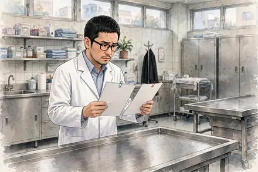

第8話・全9章・完結
二人の遺体、ひとつの名前
法医解剖医コメディ ・ 約6,991字 ・ 読了 約15分
法医解剖医・五十嵐俊介のもとに、同姓同名の男が、同じ日に二人運ばれてくる。解剖台で降りてきた映像は鮮やかだったが、遺体の指と、どうしても合わない。その小さな違和感を、俊介は署名の前に止められるか。
第1章 同じ名前
朝、教室に依頼票が二枚、続けて届いた。
会田麻衣は一枚目に目を通し、二枚目を受け取って、手を止めた。
「……先生」
「なんや、朝から改まって」
五十嵐俊介は飴を舐めながら、机の書類の山に肘をついていた。今朝の麻衣は、白いシャツに深緑のカーディガン、髪を後ろでひとつに束ねている。
「依頼票、見てください。名前」
一枚目。田村清、七十四歳。自宅で倒れているのを、訪ねてきた息子が発見。元大工。 二枚目。田村清、七十九歳。川沿いの遊歩道で倒れているのを、散歩中の通行人が発見。元漁師。
「同姓同名やな」
「同姓同名です」
「珍しいけど、あるやろ。日本は広い」
「同じ日に、同じ教室に、ですよ」
「……日本、狭いな」
麻衣はもう、仕事を始めていた。二枚の依頼票を並べ、先に届いた七十四歳の方に青いクリップ、後に届いた七十九歳の方に赤いクリップを付けた。受付番号も、それぞれの隅に小さく書き込む。1841と、1842。
「色、分けとくんや」
「名前で呼んだら、どっちか分からなくなりますから」
「俺は大丈夫や」
「先生は昨日、自分宛ての郵便を郷田先生の机に置いてました」
「あれは戦略や」
「はいはい」
電話が鳴り、搬送の到着を知らせた。遺体は二体、同じ車で運ばれてくるという。搬送業者はその朝、同じ地区を回って二か所から遺体を預かり、雨に濡れたメモを見ながら、遺体袋にタグを付け直したのだという。麻衣は受話器を置いて、クリップの色をもう一度、目で確かめた。
「先生、今日は二体です。夕方、四時から引き取りが入ってます。両方とも」
「通夜は明日の夜です。今日中に解剖が終わらなかったら、明日の日程が全部崩れます」
「二体か。……早く人員補充してくださいよ、ほんまに」
「その台詞、解剖室で遺体に言っても増えませんよ」
「分かっとる。せめて聞かせたいだけや」
俊介は飴を噛み砕いて、白衣を羽織った。
やがて廊下に、ストレッチャーの車輪の音が二つ重なって響いた。搬送業者の男は、濡れた制服の裾を気にしながら、搬送票を差し出した。朝の雨で、メモも髪も半分濡れている。
「二件とも田村様で……タグは、こちらで付け直してあります」
「付け直した？」
麻衣が聞いた。
「現場で付けた札が、雨で滲んじゃって。車の中で、新しいタグに書き写したんです。名前と年齢は、メモ通りです」
男は悪びれずに言った。それが、この仕事のいつもの手順なのだろう。遺体袋は二つ並んで、冷蔵庫と解剖室の方へ分かれていった。一体はそのまま解剖室へ、もう一体は午後の順番を待つ。
麻衣は搬送票を受け取り、自分の付けたクリップの色と、受付番号を、その場で小さく書き添えた。青、1841。赤、1842。誰も、その一手に気づかなかった。
第2章 海の映像
解剖室。一体目の遺体が、台の上にあった。
タグには、田村清、七十四歳、自宅で発見、とある。まず外表から見るのが順序だった。
体格はいい。肩も腕も、年齢のわりに張りがある。両腕には、半袖の境目ではっきり分かれた日焼けの跡があった。手のひらは厚く、指先には細かい古い傷が幾つも残っている。
俊介は、その左手を取った。
人差し指は、あった。爪も、節も、全部そろっている。
「……ん」
「先生？」
記録を取りながら、相沢直樹が顔を上げた。
「いや。なんでもない。続けるで」
俊介は遺体の胸に手を置いた。解剖台の前に立つと、教室のざわめきが遠くなる。光が差すように、映像が降りてきた。
――まだ暗い海。船のエンジンの低い音。濡れた甲板で、男が網を引く。手つきに迷いがない。網にかかった魚が跳ね、男は片手で押さえ、もう片手でロープをたぐる。指は十本とも太く、節くれだって、長年の仕事の形をしていた。
やがて空が白み、魚市場の朝が来る。競りの声、氷の砕ける音、箱いっぱいの魚。男は笑いながら、濡れた前掛けで手を拭いた。誰かが名前を呼んだ気がしたが、声は波の音に紛れて、名前だけが聞き取れなかった。
最後に、川沿いの道が見えた。歩く男の視界が、ふっと傾ぐ。空が回る。音が遠くなる。
映像はそこで途切れた。
俊介はゆっくり息を吐いた。
海の男だった。網と、船と、市場の朝。疑いようのない、一人の漁師の人生だった。
「……相沢、この人、ほんまに大工か」
「え？」
「いや、こっちの話や」
俊介はタグをもう一度見た。田村清、七十四歳、元大工、自宅で発見。
映像は嘘をつかない。俊介はそれを知っている。何年も、台の前で確かめてきた。
だが、映像の中の男が、誰なのか。映像は、それを教えてはくれなかった。
第3章 指の食い違い
外表の記録を読み返して、俊介は手を止めた。
依頼票の備考欄に、小さな字で書かれている。
『左手人差し指、先端に古い欠損あり。若い頃の仕事中の事故によるものと家族から申告』
俊介は、台の上の左手を、もう一度取った。
人差し指は、ある。先端まで、きれいにそろっている。欠けた形跡は、どこにもない。
「……相沢」
「はい」
「この指、どう見る」
相沢は身を乗り出した。
「欠損は、ありませんね。十本、全部あります」
「やんな」
俊介は笑った。笑って、飴の袋に手を伸ばしかけて、解剖室では飲食できないことを思い出してやめた。
「大工が趣味で船に乗っとった、とか」
「先生、それは」
「冗談や。……冗談のつもりやったんやけどな」
日焼けの境目。厚い手のひら。十本そろった指。そして、海の映像。
食い違いは、もう一つではなかった。積み重なっていた。
俊介は頭部も見た。傷らしい傷はない。耳の後ろも、首も、きれいだった。自宅で倒れた七十四歳なら、家具に打った跡が一つくらいあってもいい。それもない。
ないものが多い。あるはずのものが、ない。
それでも俊介は、メスを置かなかった。午後の予定が頭にあった。二体目が冷蔵庫で待っている。夕方には、両方の家族が引き取りに来る。ここで止まれば、全部が後ろに倒れる。
「映像が鮮やかやったんや」
誰に言うでもなく、俊介は呟いた。
鮮やかだった。網を引く手つきも、市場の氷の音も。それが本物だという確信が、足元の小さな食い違いを、薄くしていった。
「……外表、終わり。開けるで」
俊介がメスを持ち直した、その時だった。
「先生、待ってください」
相沢の声が、いつもと違った。
第4章 一桁
「タグの番号が、違います」
相沢は、遺体袋のタグと、台の脇に置かれた遺留品袋を、交互に指さした。
「タグは1841。でも、この遺体と一緒に来た遺留品袋は、1842です。一桁、違います」
遺留品は、現場で警察が封をして、遺体と一緒に運ばれてくる。袋には、発見場所で付けられた番号が、そのまま印字されていた。
「……事務の付け間違いとちゃうか」
俊介は言った。言ってから、その言い方が誰かに似ていると思った。面倒な兆しを、事務のせいにして、先へ進もうとする言い方だった。
「先生」
相沢はノートを抱えたまま、まっすぐ言った。
「僕も、そう思おうとしました。でも、指のこともあります。……止めて、確かめた方がいいと思います」
解剖室が、静かになった。
俊介は台の上の男を見た。海の映像は本物だった。間違いなく本物だった。だが、本物であることと、この男が依頼票の田村清であることは、別の話だった。
――映像は嘘をつかない。でも、名前は降りてこない。
以前、身元の分からない遺体を前にして、自分で作ったはずの決まりだった。それを今、鮮やかな映像の方が、上から押さえつけていた。
俊介は、メスをトレイに戻した。金属の、小さな音がした。
「……止めるで」
「はい」
「開ける前でよかった、とは言わん。外表は進んどる。でも、署名はしとらん。ここから先は、名前が確定するまで、一歩も進まん」
俊介は手袋を外した。
「相沢、よう言うた」
相沢は、ほっとした顔を一瞬だけ見せて、すぐに記録に戻った。外表の記録の欄外に、相沢の字で小さく書かれていた。『タグ番号と遺留品袋番号、不一致。確認中につき解剖中止』。時刻まで添えてある。後で誰が読んでも、どこで止まったか分かる書き方だった。
その背中を見て、俊介は思った。新人の方が、正しかった。今日はそういう日だった。
第5章 止める決断
郷田正樹は、解剖室の入口で、腕を組んで立っていた。いつの間に来ていたのか、俊介の「止める」の一言を、聞いていたらしい。
「どうした、五十嵐」
「取り違えの可能性が、あります」
俊介は、指のこと、タグと遺留品袋の番号のこと、映像が漁師のものだったことを、手短に話した。言い訳は、混ぜなかった。
郷田は台の上の遺体を一度見て、それから俊介を見た。
「所見はな、五十嵐」
穏やかな声だった。
「解剖した者について、書くもんや。台の上の男が誰か分からんうちは、一文字も書くな。書いたら、それは所見やない」
「……分かってます」
「分かっていたら、なぜメスを持ち直した」
俊介は黙った。
「映像が見えるお前が、一番危ない日がある。見えたものが鮮やかな日や」
郷田はそれだけ言って、麻衣の方を向いた。
「会田くん、照合の準備を。警察にも連絡を入れてくれ。引き取りは、四時からだったな」
「はい。ご家族には、確認のため少しお待ちいただく可能性があると、先に伝えます」
「頼む」
その時、事務室の方で電話が鳴った。麻衣の声が、ドア越しに小さく聞こえる。葬儀社からだった。引き取りの車は、四時に大学の裏口へ着く。両家とも、通夜の準備がもう始まっているという。
時計は、まだ午前だった。だが、間違いがあるなら、直せる時間はここまでだった。火葬場の予約は、一度出れば戻らない。
郷田は出ていった。俊介は、台の上の男に、小さく頭を下げた。誰の人生かまだ分からない男に、勝手な名前でメスを入れかけた。そのことへの、下げ方だった。
「さあ、相沢。ここからが、今日の本番やで」
「解剖より、ですか」
「解剖より地味で、解剖より大事なやつや」
第6章 三つの照合
事務室の机に、材料が並んだ。
現場写真。遺留品。依頼票。麻衣が三つを、番号順に、色順に、並べ直していく。
まず現場写真。警察が発見現場で撮ったものだ。
川沿いの遊歩道で倒れていた男の写真。顔写真の横に、腕の写真がある。半袖の境目で分かれた、日焼け。台の上の男と、同じ腕だった。
もう一組。自宅の座敷で倒れていた男の写真。畳の縁に投げ出された左手が写っている。人差し指の先が、ない。
「……こっちが、七十四歳の大工さんですね」
相沢が言った。
次に遺留品。台の上の遺体と一緒に来た袋、1842。中身は、濡れたタオル、漁協の組合員証、船の鍵とおぼしい古い鍵束。組合員証の名前は、田村清。生年月日から逆算すると、七十九歳。
冷蔵庫の二体目と一緒に来た袋、1841。中身は、耳の後ろに挟んでいたらしい大工の鉛筆、現場で使う手帳、そして折れた爪切り。手帳の最初のページに、震えた字で『清』とだけ書かれていた。
最後に、依頼票。
「決め手は、これです」
麻衣が、二枚の依頼票を並べた。青いクリップと、赤いクリップ。
「依頼票は、遺体より先に、警察から別々に届きました。先に届いたのが自宅の大工さんで、私は青を付けた。後に届いたのが川沿いの漁師さんで、赤を付けた。この順番は、ファクスの受信記録にも残ってます」
麻衣は、受信記録の印字された時刻まで、指でなぞった。
「遺体袋のタグは、搬送の途中で付け直されてます。濡れて読めなくなったメモを見て、逆に付けた。でも、現場で封をされた遺留品袋と、現場写真は、最初から一度も離れてません」
麻衣は、警察への確認の電話も済ませていた。現場を担当した署員が、写真と遺留品の番号に間違いはないと、その場で答えたという。搬送業者の方にも連絡がつき、タグを書き写した男が、メモの上下を取り違えた可能性を認めた。認めたからといって、照合が要らなくなるわけではなかった。認めたことは、照合の答えと、最後に重なった。
三つが、同じ答えを指していた。
台の上の男は、七十九歳、元漁師の田村清。 冷蔵庫の男が、七十四歳、元大工の田村清。
「……クリップやで、相沢」
俊介は、青と赤の小さなプラスチックを見つめた。
「今日の事件、解いたんは、クリップや」
「違いますよ」
麻衣は書類を揃えた。順番は変えずに、角だけきれいに揃えた。
「分けておいただけです。解いたのは、止めた先生と、気づいた相沢先生です」
俊介は、何か言いかけて、やめた。この事務員は、自分の手柄を、こういうふうに置く。それ以上、言葉を足すのは野暮だった。
第7章 静かな待合室
昼過ぎ、両方の家族が待合室にそろった。本来は夕方の引き取りだけのはずが、確認のために、早く来てもらったのだ。
大工の田村清の息子は、四十代後半の、父親と同じ大きな手の男だった。漁師の田村清の娘は、五十を少し過ぎた、日に焼けた腕をした女だった。
俊介は、いつものふざけた調子を、出さなかった。
「まず、謝らなあきません。お二人のご家族の、大事な方が、うちに運ばれる途中で、名札を取り違えられました。解剖は、名前がはっきりするまで止めました。メスは、まだ入れてません。外から見ただけです」
息子が、ゆっくり聞いた。
「……じゃあ、向こうの部屋におるのは、うちの親父やないんですか」
「今朝、台に乗せた方は、漁師の田村さんでした。大工の田村さんは、冷蔵庫で、そのまま待ってます。写真と遺留品と書類、三つ全部で確かめました」
怒声は、上がらなかった。
代わりに、娘の方が、小さな声で言った。
「……もし、気づかんままやったら」
言いかけて、止まった。息子の方も、同じ顔をしていた。気づかなければ、別々の家族が、別々の父親を連れて帰り、火葬場まで行っていた。その想像が、怒りよりも先に、体を冷やしていた。
「怖い思いをさせました」
俊介は頭を下げた。
「確認に、付き合ってください。お父さんの持ち物、見せます。それが一番確かやから」
大工の手帳と鉛筆を見て、息子はすぐに頷いた。
「親父の字や。鉛筆は、耳に挟むから短いんです」
漁協の組合員証と船の鍵を見て、娘は鍵束を握りしめた。
「この鍵、船小屋のや。……父ちゃんのや」
娘は、組合員証の写真を長いこと見ていた。白髪の男が、少し照れたように笑っている。
「若い頃の写真です。……でも、この目、父ちゃんです」
息子の方は、大工の手帳をめくり、最後のページで手を止めた。明日の仕事の段取りが、鉛筆で三行、書いてあった。明日があるつもりでいた男の字だった。
「……親父、明日も仕事するつもりやったんやな」
誰も、何も言わなかった。待合室の時計の音だけが、やけに大きく聞こえた。
二人は、それぞれの父親の持ち物を、それぞれの手に受け取った。取り違えは、ここで終わった。書類の上でも、家族の手の上でも。
第8章 やり直し
午後、解剖は正しい組み合わせで、最初からやり直された。
先に、七十四歳、大工の田村清。左手の人差し指には、古い欠損があった。胸を開くと、心臓が答えを持っていた。冠動脈は細く詰まり、心筋には新しい梗塞の跡。倒れたのは自宅の座敷で、争った形跡は、体にはどこにもなかった。
俊介の手つきは、朝より速かった。無駄な動きが、一つもなかった。相沢が記録で追いつけずにいると、俊介は数字を二度、繰り返してやった。
「慌てるな。速いのは俺の手だけや。お前は正確に書け」
「心筋梗塞やな。事件性は、なし」
次に、七十九歳、漁師の田村清。朝の映像の男は、台の上で待っていた。今度は、名前と体と映像が、一つに重なっていた。頭の中では、血管が破れていた。くも膜下出血。川沿いの道で視界が回った、あの映像の終わりと、ぴたりと合った。
「こっちも、事件性はなしや。……朝の映像、船の上やなかったんやな。あれは、陸で回っとったんや」
相沢が記録を止めて言った。
「先生、映像は同じでも、意味が違いましたね」
「そうや。映像は嘘をつかん。間違うのは、いつもこっちや」
二つの所見は、四時の引き取りに間に合った。葬儀社の車が裏口に着く音がして、麻衣が受付の印を押し直した。俊介は署名の前に、名前の欄を二度読んだ。田村清、七十四歳。田村清、七十九歳。年齢も、発見場所も、死因も、もう取り違えてはいなかった。読み比べてから、ペンを置いた。
家族は、それぞれの父親を、それぞれ連れて帰った。
第9章 名札
夕方、教室は静かだった。
麻衣は、二枚の依頼票をファイルに綴じた。青いクリップと赤いクリップは、外さずに、そのまま付けてあった。
「外さんのか」
「外しません。この話、クリップがなかったら始まらなかったんですから」
「大げさやな」
「大げさじゃありません」
相沢は、自分のノートに、今日の日付も書かずに、大きく丸を一つ描いていた。何の丸かは、本人も説明できないらしかった。
俊介は帰り支度をして、白衣を脱ぎかけ、ふと止まった。
胸の名札を見た。
『五十嵐 俊介』
間違いない。自分の名前だった。わざわざ声に出して、読んだ。
「……五十嵐、俊介。よし」
「先生、何してるんですか」
「確認や。今日はそういう日やろ」
「先生の名札が取り違えられる心配は、誰もしてません」
「麻衣ちゃん、俺かてたまには慎重になるんや」
「たまに、ですね」
俊介は名札を外して、ポケットにしまった。
「相沢、今日の礼は、人員補充の願いを一回分、聞くことで勘弁したる」
「それ、礼になってませんよ」
「なっとる。……早く人員補充してくださいよ、ほんまに」
解剖室の明かりが落ちた。同姓同名の二人は、もうどこにもいなかった。教室に残ったのは、青と赤のクリップの付いた、二枚の依頼票だけだった。
― 完 ―
読んでくださって、ありがとうございます。
一言でも構いません、感想をいただけると励みになります。